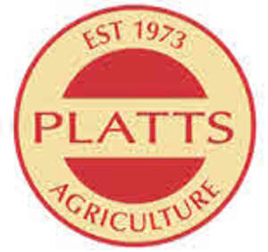
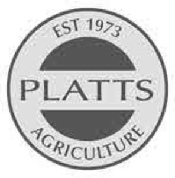

Trade Mark Journal No.2025/035 29 August 2025
UK00004250030 15 August 2025 (4,31,35,37,39,41,44)
Mark 1

Mark 2

- Class 4
- Biomass fuels; firewood; Biomass fuels, namely wood pellets made from compressed sawdust and wood shavings, sold as a renewable and sustainable fuel source for heating, bagged and loose firewood logs for domestic and commercial heating purposes.
- Class 31
- Animal bedding; animal bedding bagged and baled; loose animal bedding; antibacterial animal bedding; antibacterial animal bedding sold in bags and bales; sawdust and wood shavings for use as animal bedding; animal bedding and antibacterial animal bedding for livestock, birds and pets; cat litter.
- Class 35
- Retail and wholesale services, including via the internet, relating to agricultural machinery, namely machinery for bedding cubicles, zero grazing and slurry management, slurry separators, tractors, silage trailers, muck spreaders, and parts and fittings for those all the aforesaid goods; Retail and wholesale services, including via the internet, relating to animal bedding, animal bedding bagged and baled, loose animal bedding, antibacterial animal bedding, antibacterial animal bedding sold in bags and bales, sawdust and wood shavings for use as animal bedding, animal bedding and antibacterial animal bedding for livestock, birds and pets, cat litter, cow licks, and cow mats.
- Class 37
- Installation, cleaning, maintenance and repair of agricultural machinery namely machinery for bedding cubicles, zero grazing, and slurry management, slurry separators, tractors, silage trailers, muck spreaders, and parts and fittings for the aforesaid goods.
- Class 39
- Haulage services; haulage services relating to curtain siders, walking floors, step trailers, electric loaders, animal bedding products, and waste carriers; rental of tractors.
- Class 41
- Education services; provision of online educational videos (not downloadable); career information and advisory services (educational and training advice); career counselling[training and education advice]: career information and advisory services (other than educational and training advice); training services in relation to health and safety.
- Class 44
- Farming equipment rental; farming apparatus (rental of); hire of agricultural machinery, namely machinery for bedding cubicles, zero grazing, and slurry management, slurry separators, silage trailers, and muck spreaders.
Platts Agriculture Limited
Representative: Forresters IP LLP